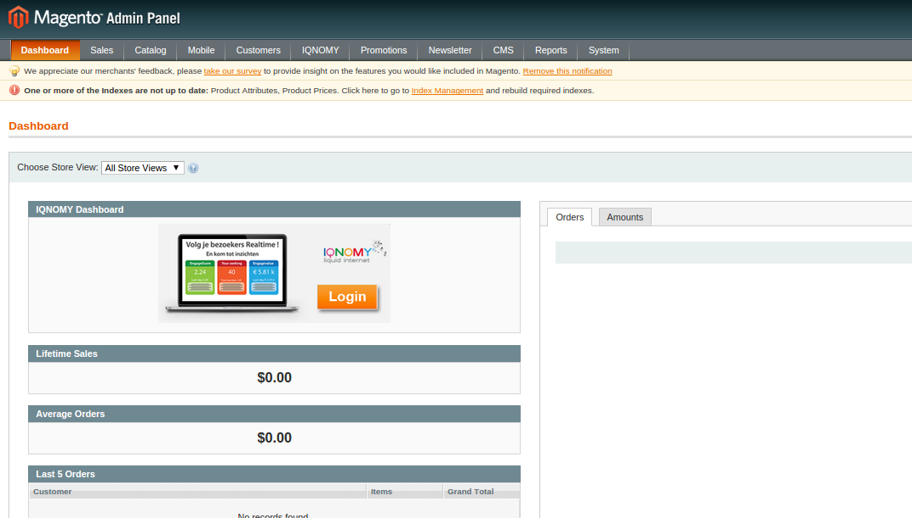
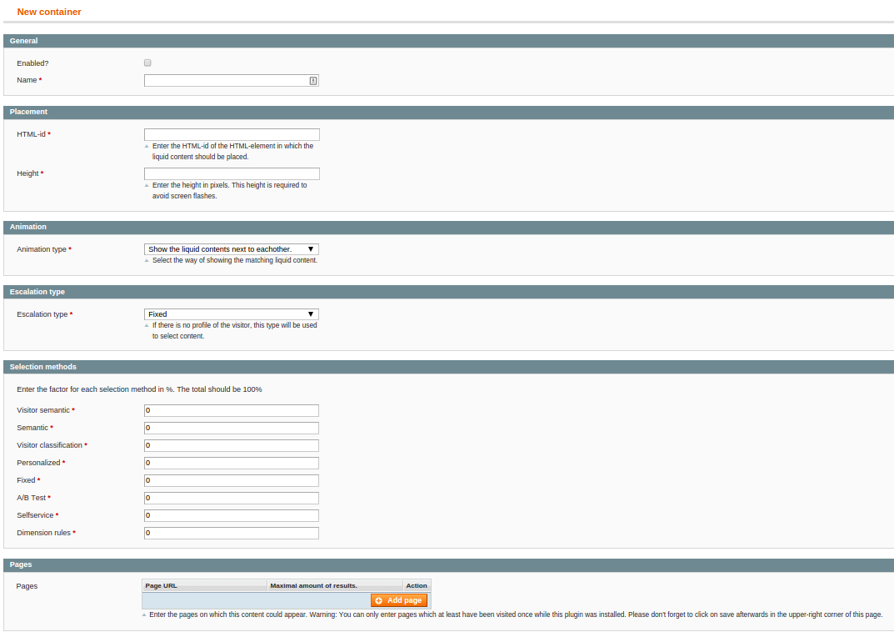

Administrators¶
Introduction¶
The Magento extension is available in the Magento administration. On the dashboard you will find the IQNOMY logo with a link to your IQNOMY account.
Standard cases¶
In the Magento administration the standard cases in IQNOMY can be managed.
- Lead generation
- Selected for you
- Main slider
Configuration¶
The configuration of the extension can be found through the main navigation System > Configuration. If you scroll down you will find the Services part in the sidebar.

This will open the extension configuration.

Custom liquid internet¶
The standard cases are the main cases, but you can also manage custom liquid internet cases in this extension.
Go in the main menu to System > IQNOMY.
And you can add content to a container.
Magento Connect¶
You can use magento connect to install or upgrade the extension.